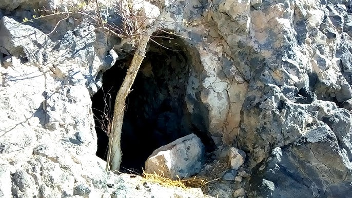

19 Y esta es la condenación: que la luz vino al mundo, y los hombres amaron más las tinieblas que la luz, porque sus obras eran malas.
20 Porque todo aquel que hace lo malo, aborrece la luz y no viene a la luz, para que sus obras no sean reprendidas.
21 Mas el que practica la verdad viene a la luz, para que sea manifiesto que sus obras son hechas en Dios.
14 ¿No son todos espíritus ministradores, enviados para servicio a favor de los que serán herederos de la salvación?
7 ¿A dónde me iré de tu Espíritu? ¿Y a dónde huiré de tu presencia?